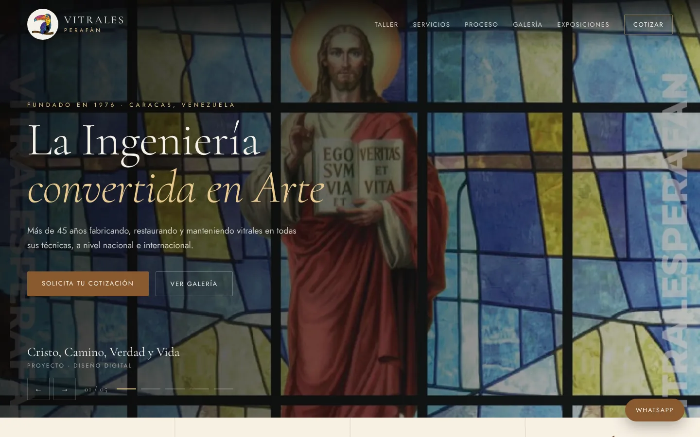
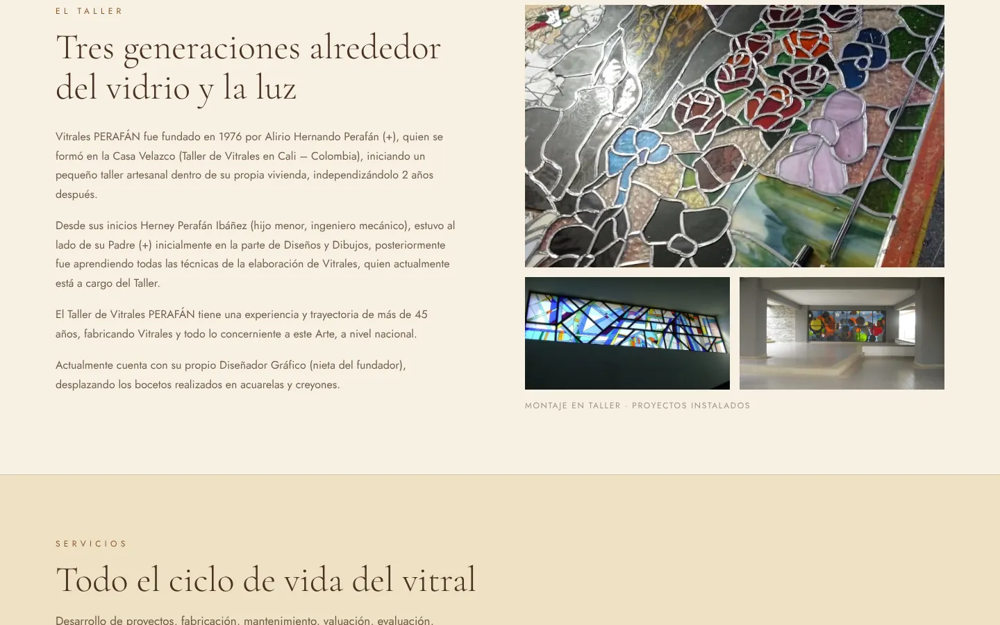

Un taller de vitrales fundado en 1976.

Que el trabajo de décadas se vea en línea.
Y presupuesto en una sola web.

Por fin tenemos una web que enseña nuestro trabajo como se merece. Ahora los clientes nos llegan con la idea clara después de ver la galería.
Herney Perafán · Dueño de Vitrales Perafán · Web
Calcula la tuya en lumenestudio.tech
Calcula la tuya